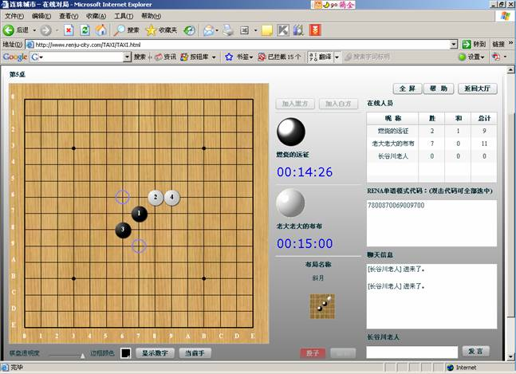

连珠城市全新运作
#1 连珠城市全新运作作者：有志青年 发表时间：2008-5-27 11:54:26
连珠城市网【http://www.renju-city.com】最初于2007年2月21日发布，曾负责过“经纬杯”第五届上海名人邀请赛本赛的棋谱发布工作。当时有注册用户一百四十多人。原网站因技术原因，于同年8月关闭进行重建。 经过重建的连珠城市于2008年5月24日重新开始运作。新版的连珠城市网包括在线对局、对局检索、在线研究和连珠城市论坛等四个部分。在线对局、在线研究的账号通用，原注册用户账号依然有效；论坛需要独立注册。网站建议使用1024x768像素分辨率，运行需要flash player9的支持。如果无法显示flash界面，请先下载相关插件。

更多帮助见：http://www.renju-city.com/Help/
#2 Re:连珠城市全新运作作者：lfzxdh 发表时间：2008-5-27 13:33:02
那就有三个新的下棋地方了~~啊
#3 Re:连珠城市全新运作作者：逆刃 发表时间：2008-5-27 13:38:02
下棋的地方还是很多的，就是人气不怎么旺，要想办法提高人气才行。#4 Re:连珠城市全新运作作者：沈毅 发表时间：2008-5-27 18:34:58
 感谢有志青年的宣传，连珠城市的设想是打造浏览器中的ORC，我想，现在连珠城市是最便捷的网络五子棋平台了。现在还没有什么人去，因此欢迎大家多多宣传。
感谢有志青年的宣传，连珠城市的设想是打造浏览器中的ORC，我想，现在连珠城市是最便捷的网络五子棋平台了。现在还没有什么人去，因此欢迎大家多多宣传。
另外，连珠城市最新推出的在线研究系统是目前最适合讲课和网上交流研究的系统，欢迎大家试用并提出改进建议。